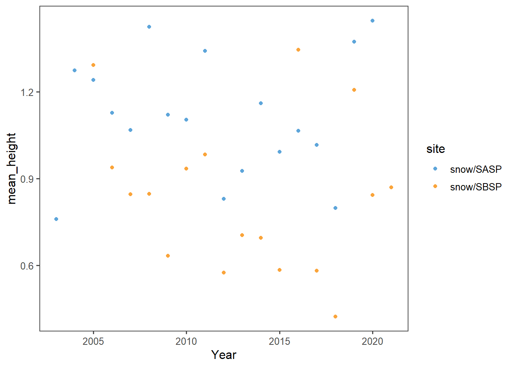

Chapter 3 Simple web scraping Snow Studies
R can read html using either rvest, xml, or xml2 packages. Here we are going to navigate to the Center for Snow and Avalanche Studies Website and read a table in. This table contains links to data we want to programmatically download for three sites. We don’t know much about these sites, but they contain incredibly rich snow, temperature, and precipitation data.
3.1 Scraping data
Read the snow studies archive page to identify data for download.
site_url <- 'https://snowstudies.org/archived-data/'
#Read the web url
webpage <- read_html(site_url)
#Extract only weblinks and then the URLs!
links <- webpage %>%
html_nodes('a') %>%
.[grepl('24hr',.)] %>%
html_attr('href')3.1.1 Download the data.
#Grab only the name of the file by splitting out on forward slashes
splits <- str_split_fixed(links,'/',8)
#Keep only the 8th column
dataset <- splits[,8]
#generate a file list for where the data goes
datapath = 'data/snow/'
dir.create(datapath)
file_names <- paste0(datapath,dataset)
for(i in 1:3){
download.file(links[i],destfile=file_names[i])
}
downloaded <- file.exists(file_names)
evaluate <- !all(downloaded)3.2 Data read-in
#Pattern matching to only keep certain files
snow_files <- file_names %>%
.[!grepl('SG_24',.)] %>%
.[!grepl('PTSP',.)]
our_snow_reader <- function(file){
name = str_split_fixed(file,'/',2)[,2] %>%
gsub('_24hr.csv','',.)
df <- read_csv(file) %>%
select(Year,DOY,Sno_Height_M) %>%
mutate(site = name)
}
snow_data_full <- map_dfr(snow_files,our_snow_reader)## Rows: 6211 Columns: 52
## -- Column specification --------------------------------------------------------
## Delimiter: ","
## dbl (52): ArrayID, Year, DOY, Hour, LoAir_Min_C, LoAir_Min_Time, LoAir_Max_C...
##
## i Use `spec()` to retrieve the full column specification for this data.
## i Specify the column types or set `show_col_types = FALSE` to quiet this message.
## Rows: 6575 Columns: 48
## -- Column specification --------------------------------------------------------
## Delimiter: ","
## dbl (48): ArrayID, Year, DOY, Hour, LoAir_Min_C, LoAir_Min_Time, LoAir_Max_C...
##
## i Use `spec()` to retrieve the full column specification for this data.
## i Specify the column types or set `show_col_types = FALSE` to quiet this message.3.3 Plot snow data
## Year DOY Sno_Height_M site
## Min. :2003 Min. : 1.0 Min. :-3.523 Length:12786
## 1st Qu.:2008 1st Qu.: 92.0 1st Qu.: 0.350 Class :character
## Median :2012 Median :183.0 Median : 0.978 Mode :character
## Mean :2012 Mean :183.1 Mean : 0.981
## 3rd Qu.:2016 3rd Qu.:274.0 3rd Qu.: 1.520
## Max. :2021 Max. :366.0 Max. : 2.905
## NA's :4554
3.4 Extract the meteorological data URLs.
Here we want you to use the rvest package to get the URLs for the SASP forcing and SBSP_forcing meteorological data sets.
q1_links <- webpage %>%
html_nodes('a') %>%
.[grepl('forcing',.)] %>%
html_attr('href')3.5 Download the meteorological data.
Use the download_file and str_split_fixed commands to download the data and save it in your data folder. You can use a for loop or a map function.
q2_splits <- str_split_fixed(q1_links,'/',8)
#Keep only the 8th column
q2_dataset <- q2_splits[,8]
q2_file_names <- paste0(datapath,q2_dataset)
for(i in 1:2){
download.file(q1_links[i],destfile=q2_file_names[i])
}
q2_downloaded <- file.exists(file_names)
evaluate <- !all(q2_downloaded)3.6 Read data
Write a custom function to read in the data and append a site column to the data.
# this code grabs the variable names from the metadata pdf file
q3_headers <- pdf_text('https://snowstudies.org/wp-content/uploads/2022/02/Serially-Complete-Metadata-text08.pdf') %>%
readr::read_lines(.) %>%
trimws(.) %>%
str_split_fixed(.,'\\.',2) %>%
.[,2] %>%
.[1:26] %>%
str_trim(side = "left")
q3_reader <- function(file){
fileName = str_split_fixed(file,'/',2)[,2]
nameRight = str_split_fixed(fileName,'_',2)[,2]
nameLeft = str_split_fixed(nameRight,'_',2)[,1]
df <- read.delim(file, header = FALSE, sep ="",col.names = q3_headers,skip = 4) %>%
mutate(site = nameLeft) %>%
mutate(date = as.Date(paste(year, month, day, sep = "-"))) %>%
mutate(air_temp_k = air.temp..K.) %>%
mutate(air_temp_c = kelvin.to.celsius(air.temp..K.))
}3.7 Use the map function
Read in both meteorological files. Display a summary of your tibble.
q4_full <- map_dfr(q2_file_names,q3_reader)
summary(q4_full['air_temp_k'])## air_temp_k
## Min. :242.1
## 1st Qu.:265.8
## Median :272.6
## Mean :272.6
## 3rd Qu.:279.7
## Max. :295.8summary(q4_full['precip..kg.m.2.s.1.'])## precip..kg.m.2.s.1.
## Min. :0.000e+00
## 1st Qu.:0.000e+00
## Median :0.000e+00
## Mean :3.838e-05
## 3rd Qu.:0.000e+00
## Max. :6.111e-033.8 Mean Air Temperture by Year
Make a line plot of mean temp by year by site (using the air temp [K] variable). Is there anything suspicious in the plot? Adjust your filtering if needed.
Figure 3.1: Mean Air Temperture by Year
Figure 3.1 shows the annual mean air temperature for both sites in a given year. 2003 & 2004 have unusually low air temperatures.
Figure 3.2: Boxplot Air Temperture by Year
In figure 3.2 we see the air temperature in 2004 was only slightly lower, with the interquartile range being roughly the same. On the other hand 2003 had a significantly narrower interquartile range. At the scale of 1 year it is difficult to tell how much the 2003 data is skewed by collecting part of the year, if it was unusually cold that year, or if there was an issue with the instrumentation.
Figure 3.3: Mean air temperture by month
In 3.3 we see that it was unusually cold at both sites for the 2003 & 2004 data. Much more for the SBSP. Due to only collecting data for the end of the year, 2003 data has a lower mean temperature as it does not include the summer months. Looking at the header file Serially-Complete-Metadata-text08.pdf we can see that they do include QC Code columns, but those values do not appear in the data set itself. The table of code values indicate some of the data has the followings errors, but the dates are not specified.
3.9 Air Temperture Error Codes
- 5001: missing data: use data from upper measurement location at same site (regression fill)
- 5003: missing data: use data from paired site (regression fill)
- 6000: before desired time period
- 6001: missing data: use data from upper measurement location at same site (regression fill)
- 6002: missing data: use data from paired site (regression fill)
- 6009: missing data: assume RH is 50%.
3.10 Mean Air Temperture Multiple Years
Write a function that makes line plots of monthly average temperature at each site for a given year. Use a for loop to make these plots for 2005 to 2010. Are monthly average temperatures at the Senator Beck Study Plot ever warmer than the Snow Angel Study Plot? Hint: https://ggplot2.tidyverse.org/reference/print.ggplot.html
Figure 3.4: Line Chart Air Temperture by Month 2005-2010
Figure 3.5: Line Chart Air Temperture by Month 2005-2010
Figure 3.6: Line Chart Air Temperture by Month 2005-2010
Figure 3.7: Line Chart Air Temperture by Month 2005-2010
Figure 3.8: Line Chart Air Temperture by Month 2005-2010
Figure 3.9: Line Chart Air Temperture by Month 2005-2010
Monthly average temperatures at the Snow Angel Study Plot are consistently warmer than the Senator Beck Study Plot. At no point from 2005 to 2010 was the Snow Angel Study Plot mean monthly temperature lower than the Senator Beck Study Plot.
Figure 3.10: Line Chart Air Temperture by Month
Figure 3.11: Line Chart Air Temperture by Month
3.11 Average Daily Percipitation
Make a plot of average daily precipitation by day of year (averaged across all available years). Color each site.
Figure 3.12: Average daily percipitation
The number of years is not great enough to handle daily precipitation well. Trying monthly.
Figure 3.13: Average daily percipitation in a given month
That was not helpful for finding a pattern. Also note: the daily precipitation is identical at both sites.